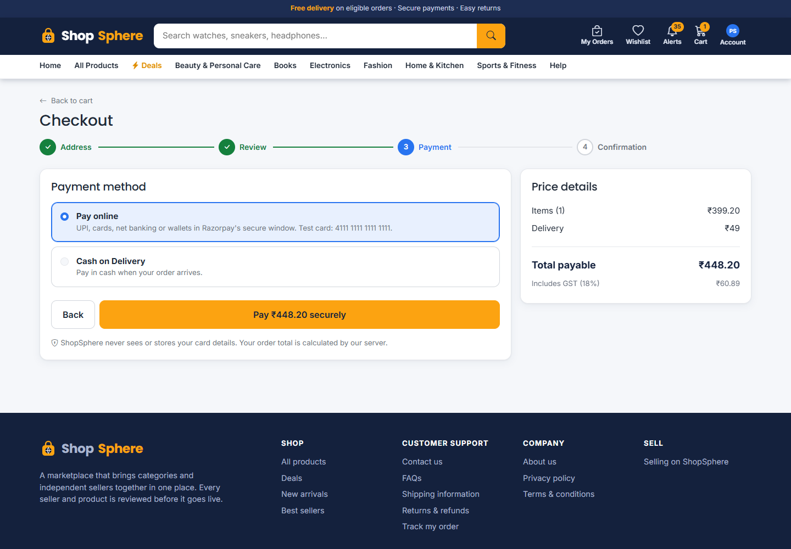
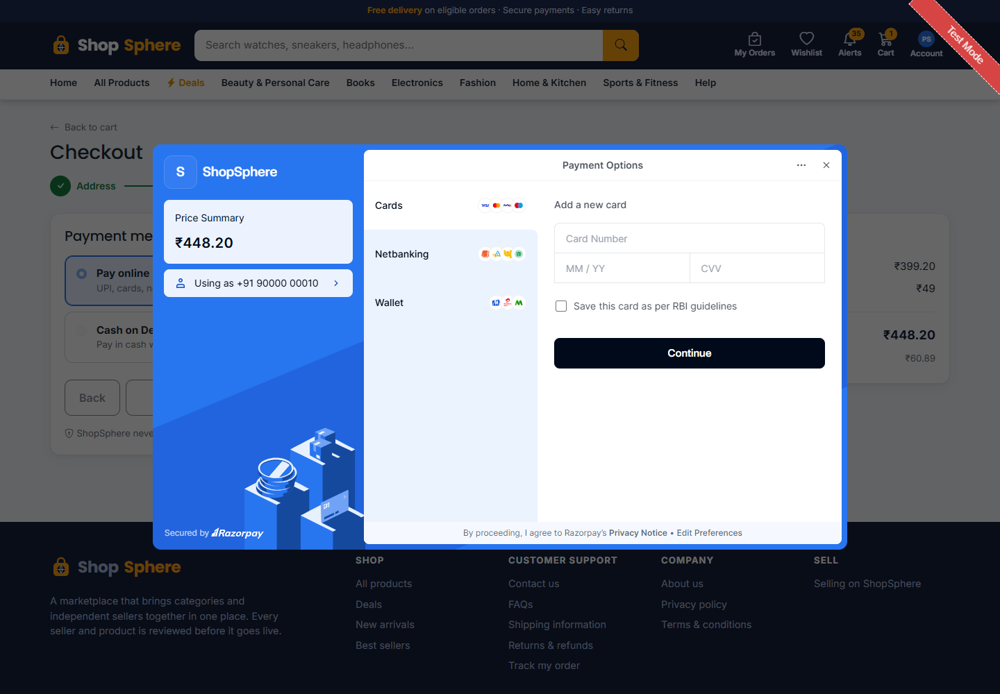
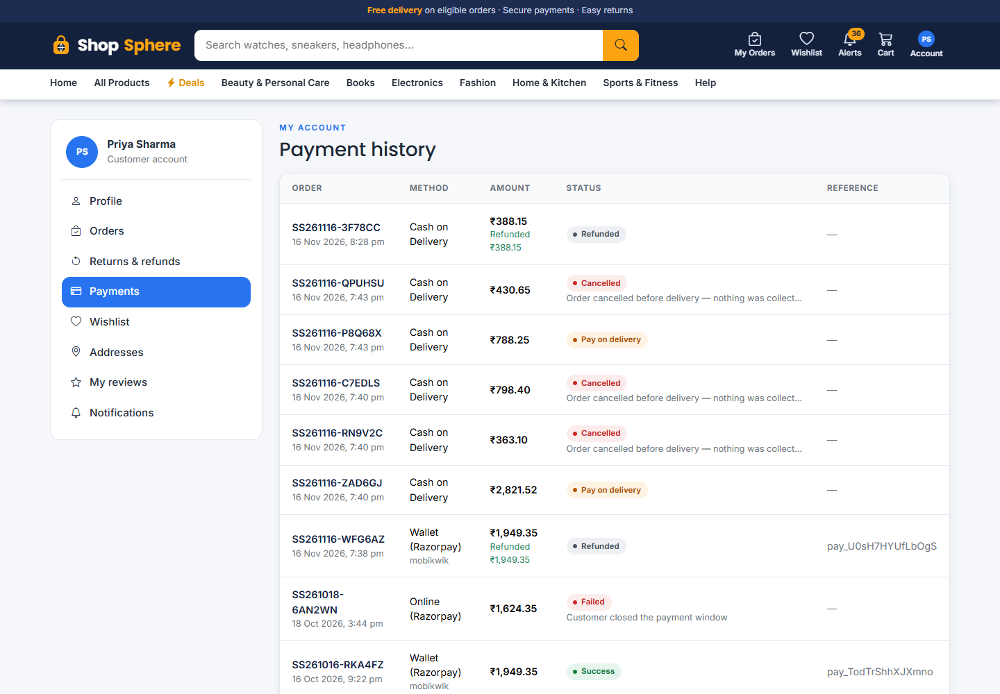
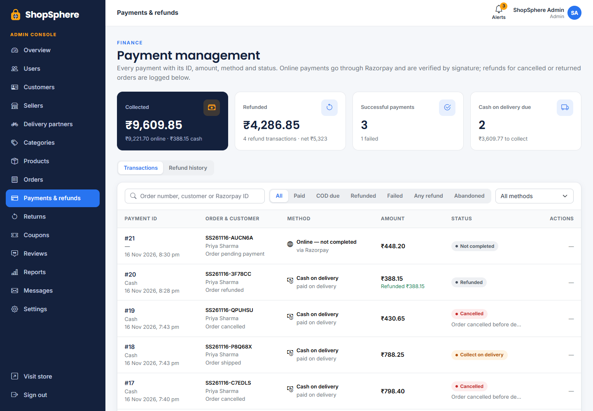
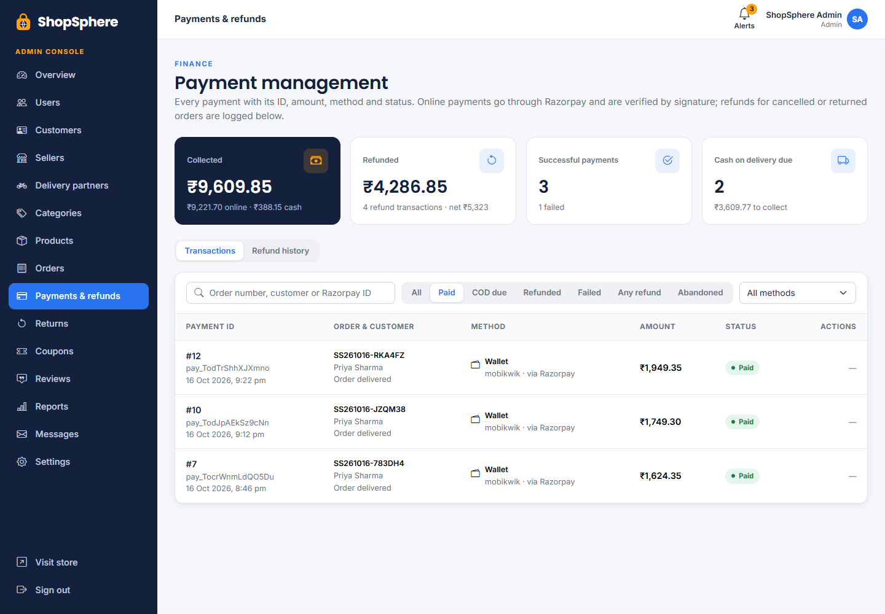
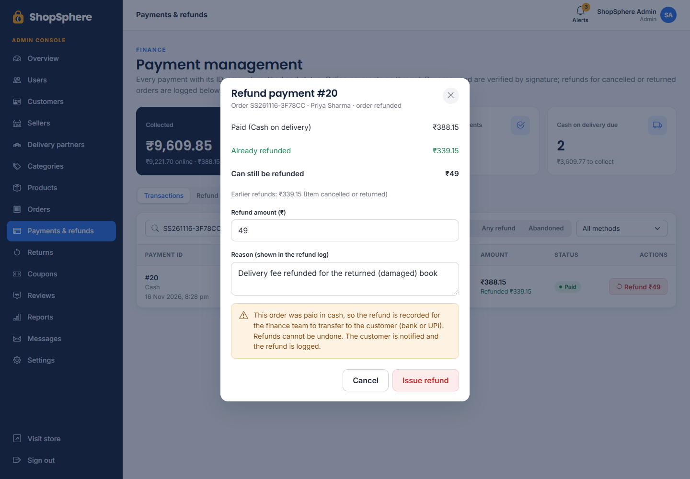
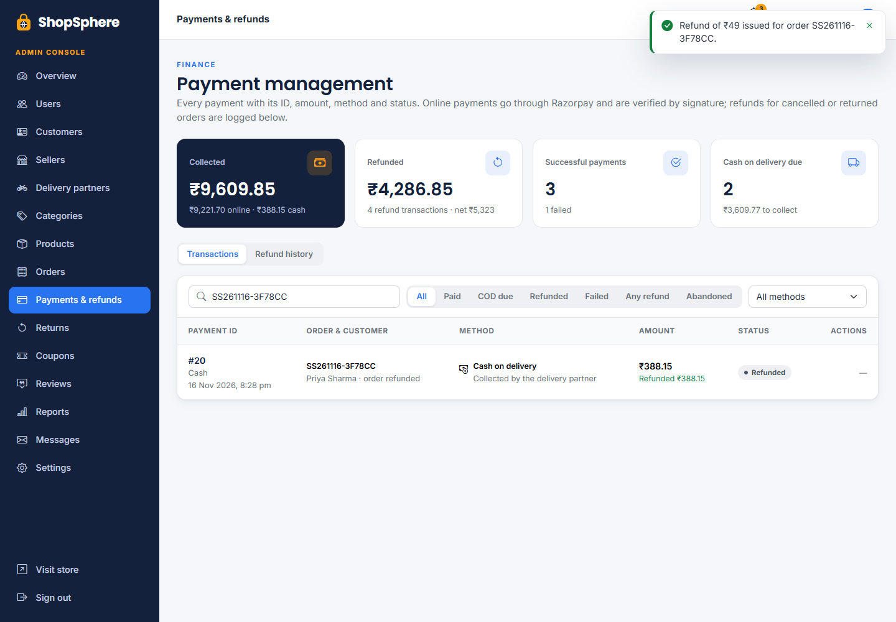
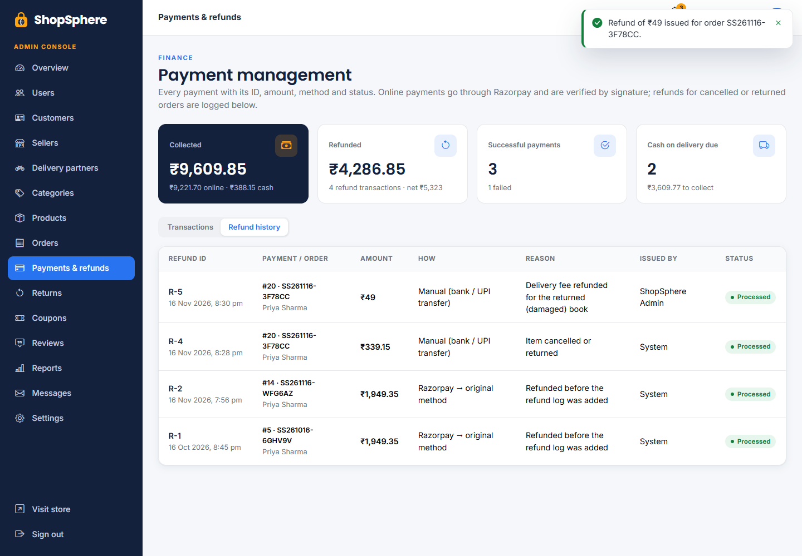

This document submits the Payment Management module of ShopSphere, a multi-vendor e-commerce website, with its code repository, hosted link, requirement checklist and user guide.
| Item | Details |
|---|---|
| Candidate | Anil Nayak |
| Internship | ITVedant / Vibgyor Advisors integrated internship |
| Project | ShopSphere — multi-vendor e-commerce platform |
| Module | Payment Management (checkout and Admin console) |
| Payment gateway | Razorpay (test mode): cards, UPI, net banking, wallets including PayPal; plus Cash on Delivery |
| Frontend | React 19, Vite, React Router, Bootstrap 5 |
| Backend | Java 17, Spring Boot 4, Spring Security (JWT), Spring Data JPA, Razorpay Java SDK |
| Database | MySQL (database ecommerce_intern, tables payments and refunds) |
Repository: https://github.com/anilnayak9969-cmd/ShopSphere
The repository holds the complete project. Secret settings (database password, JWT secret, Razorpay API keys and webhook secret, email password) are not committed; an example settings file shows what to fill in.
| Folder | Contents |
|---|---|
Backend/ecommerce | Spring Boot API. The module's code is RazorpayGateway (the only class that talks to Razorpay), CheckoutServiceImpl (create, verify and complete payments, webhook), RefundService (refunds + refund log), PaymentAdminServiceImpl (dashboard, summary, admin refunds), AdminPaymentController, PaymentWebhookController, the Payment and Refund entities and PaymentInstrument. Tests: PaymentManagementTest, CheckoutServiceImplTest. |
Frontend/ecommerce | React website. Customers pay at src/pages/Checkout.jsx (Razorpay Checkout loaded by src/utils/razorpay.js) and see src/pages/customer/Payments.jsx; the admin screen is src/pages/admin/AdminPayments.jsx. |
DataBase | queries.sql (section 10: Payment Management SQL) |
Docs/PaymentManagement | This document, its screenshots and the module README |
README.md | Setup steps (including Razorpay keys and webhook), features and API reference |
Website: https://host-shop-sphere.vercel.app/
To try the module, sign in with the admin account below and open Admin console → Payments & refunds. Customers pay at checkout.
| Login | Value |
|---|---|
| Admin email | admin@shopsphere.com |
| Admin password | (shared separately with the evaluator) |
| Razorpay test card | 4111 1111 1111 1111, any future expiry, any CVV (test mode — no real money) |
Every functionality in the assignment is implemented and was tested in the running application. Online payment through Razorpay and automatic refunds already existed in ShopSphere; the items marked ADDED were built for this assignment.
| Requirement | How ShopSphere implements it | Status |
|---|---|---|
| 1. Process payment Through an external gateway; cards, PayPal and bank transfers | Payments go through Razorpay, an external payment gateway (the Indian equivalent of Stripe). Razorpay's secure window offers credit/debit cards, UPI, net banking (bank transfer) and wallets including PayPal; customers can also choose Cash on Delivery. The server creates the Razorpay order, checks Razorpay's HMAC-SHA256 signature before confirming, and also accepts Razorpay's signed webhook. The exact method used (e.g. "Visa ···· 1111", "UPI", "HDFC net banking", "PayPal") is now recorded on each payment ADDED. Card numbers are never seen or stored. | Implemented |
| 2. Payment dashboard Transaction history with payment ID, amount, payment method and status | Admin → Payments & refunds: summary cards ADDED (collected, refunded, net, successful/failed, cash due), and every payment with payment ID, Razorpay reference, order and customer, payment method ADDED, amount, refunded amount and status. Filters: All / Paid / COD due / Refunded / Failed / Any refund / Abandoned, method filter and search ADDED. | Implemented |
| 3. Refund payment Admins issue refunds for cancelled or returned orders; refunds are logged and shown on the dashboard | Refunds happen automatically when an order is cancelled or a return is approved. Admins can now also issue a refund themselves with Refund ₹… ADDED — only for cancelled or returned orders and never more than was paid. Every refund (automatic or by an admin, successful or failed) is written to a new refunds table ADDED and shown in Refund history on the dashboard ADDED. | Implemented |
| Database design Table payments | All assignment columns exist (see Appendix A); instrument / instrument_detail and the refunds table were added. | Implemented |
Payment Management takes the customer's money safely and keeps a record of every transaction. Customers pay at checkout; the ShopSphere administrator watches every payment, sees how much was collected and refunded, and refunds customers whose orders were cancelled or returned.
Payment statuses. Paid (success) — the money was received. Collect on delivery — a Cash on Delivery order whose cash is collected when it is delivered. Failed — the customer's bank declined or the window was closed. Not completed — the customer opened the payment window but never paid. Refunded — all of the money was given back. Cancelled — a cash order was cancelled before delivery, so nothing was collected.
Who uses it: customers pay and see their own payment history; only users with the Admin role see all payments and issue refunds.



| Part of the page | What it shows |
|---|---|
| Collected card | All money received, split into online (Razorpay) and cash |
| Refunded card | Money given back, the number of refund transactions, and the net amount kept |
| Successful payments card | Payments currently paid in full, and how many failed |
| Cash on delivery due card | Cash orders still to be collected, and the amount |
| Transactions / Refund history | Switch between the payment list and the refund log (section 4.4) |
| Search box | Order number, customer name or email, or Razorpay payment ID |
| Status buttons | All, Paid, COD due, Refunded, Failed, Any refund, Abandoned (not completed) |
| All methods list | Online (Razorpay) or Cash on delivery only |
| Table: Payment ID | ShopSphere's payment number (#20), Razorpay's payment ID (pay_…) or "Cash", and the date |
| Table: Order & customer | Order number, customer and the order's status |
| Table: Method | Credit/debit card (network and last 4 digits), UPI, Net banking (bank), Wallet / PayPal, or Cash on delivery |
| Table: Amount | Amount paid, and how much of it was refunded |
| Table: Status | Paid, Collect on delivery, Failed (with the reason), Not completed, Refunded, Cancelled |
| Refund ₹… button | Appears only on payments that can be refunded (section 4.3) |


Refunds are mostly automatic: cancelling an order or approving a return refunds the money for those items straight away. The admin uses Refund for what is left, for example the delivery fee of a returned order, or to retry a refund that failed.


Click Refund history to see every refund transaction, newest first: refund ID, payment and order, amount, how it was paid back (Razorpay to the original method, or a manual bank/UPI transfer for cash orders, with Razorpay's refund ID), the reason, who issued it ("System" for automatic refunds, otherwise the admin's name) and whether it was Processed or Failed. Failed attempts stay in the log so nothing goes missing.

| Situation | Message shown | What to do |
|---|---|---|
| Refund for an order that was not cancelled or returned | Refunds can be issued only for cancelled or returned orders. | Cancel the order or approve the return first |
| Refund more than is left | You can refund at most ₹…. | Lower the amount |
| Payment not collected (failed, not completed, cash still due) | This payment has no collected amount left to refund. | Nothing to refund |
| Amount below ₹1 or more than 2 decimals | Refund amount must be at least ₹1 / Use at most 2 decimal places | Correct the amount |
| Reason missing or too short | Give a reason of at least 5 characters | Explain the refund |
| Razorpay cannot process the refund | Razorpay could not process the refund. It is logged as failed … | Try again later or refund from the Razorpay dashboard |
| Payment signature does not match | We could not verify this payment. If money was debited, it will be refunded by Razorpay. | The order is not placed; the customer tries again |
| Customer closes the Razorpay window | Payment shown as Failed — Customer closed the payment window | The customer can pay again from checkout |
| A customer or seller calls an admin payment API | HTTP 403 — You do not have permission to access this resource | Only admins see all payments |
Why Razorpay instead of Stripe or PayPal? ShopSphere sells in India in rupees. Razorpay is the Indian payment gateway that offers cards, UPI, net banking and wallets (including PayPal) in one window, the same role Stripe plays elsewhere.
When does the customer get the money back? Razorpay refunds usually reach the card, bank or wallet in 5–7 working days. Cash refunds are paid by the finance team.
Can a refund be cancelled? No. That is why the refund window warns before issuing it and every refund is logged.
Why are there "Not completed" payments? The customer opened Razorpay's window but did not pay. No money moved; the order was never placed.
Is this real money? Not on the local and test setup: Razorpay runs in test mode, where test cards are accepted and nothing is charged.
Figures 1–9 were taken from the complete application running locally: the React frontend on http://localhost:5173, the Spring Boot backend on http://localhost:8080, the MySQL database ecommerce_intern and Razorpay in test mode. For the refund figures, the demo customer (Priya Sharma) placed a Cash on Delivery order for one book (SS261116-3F78CC, ₹388.15 including ₹49 delivery); it was delivered, she returned the damaged book, the return was approved (automatic refund of ₹339.15), and the admin then refunded the ₹49 delivery fee.
Payments are stored in the MySQL table payments (one row per payment attempt, linked to its order). Refund transactions are stored in refunds.
| Assignment column | Assignment type | ShopSphere column and type | Meaning |
|---|---|---|---|
| payment_id | int (pk, auto_increment) | payment_id BIGINT, primary key, auto increment | Unique identifier for each payment |
| order_id | int (fk) | order_id BIGINT, foreign key → orders.order_id | The order being paid for |
| amount | decimal(10,2) | amount DECIMAL(12,2), with currency (INR) | Amount paid |
| payment_method | varchar(50) | method VARCHAR(20): RAZORPAY or COD; instrument VARCHAR(20): CARD, UPI, NETBANKING, WALLET, PAYPAL, CASH …; instrument_detail VARCHAR(80), e.g. "Visa ···· 1111" | How the customer paid |
| payment_status | varchar(50) | status VARCHAR(20): SUCCESS (paid), FAILED, REFUNDED, PENDING (cash due), CREATED (not completed), CANCELLED | Status of the payment |
| created_at | datetime | created_at DATETIME(6) | When the payment was started |
| updated_at | datetime | updated_at DATETIME(6) | When the payment was last updated |
Other payments columns: razorpay_order_id, razorpay_payment_id (gateway references), refunded_amount (running total of refunds), failure_reason.
Table refunds (new): refund_id (pk), payment_id (fk → payments), amount DECIMAL(12,2), mode (RAZORPAY or MANUAL), status (PROCESSED or FAILED), razorpay_refund_id, reason, initiated_by ("System" or the admin's name), created_at, updated_at. Refunds made before the table existed were added to it once, so the log is complete.
The full, tested set is in DataBase/queries.sql, section 10.
-- Payment dashboard: payment ID, order, amount, method and status SELECT p.payment_id, o.order_number, u.full_name AS customer, p.amount, p.method, p.instrument AS payment_method, p.instrument_detail, CASE p.status WHEN 'SUCCESS' THEN 'Paid' ELSE p.status END AS payment_status, p.refunded_amount, p.razorpay_payment_id, p.created_at FROM payments p JOIN orders o ON o.order_id = p.order_id JOIN users u ON u.user_id = o.customer_id ORDER BY p.created_at DESC LIMIT 10; -- Summary: collected, refunded, net SELECT SUM(CASE WHEN status IN ('SUCCESS','REFUNDED') THEN amount ELSE 0 END) AS collected, SUM(refunded_amount) AS refunded FROM payments; -- Payments that can be refunded (paid, money left, order cancelled or returned) SELECT p.payment_id, o.order_number, p.amount - p.refunded_amount AS refundable FROM payments p JOIN orders o ON o.order_id = p.order_id WHERE p.status = 'SUCCESS' AND p.amount > p.refunded_amount AND o.status IN ('CANCELLED','RETURN_REQUESTED','RETURNED','REFUNDED'); -- Issue a refund of ₹49 on payment 20 (Razorpay's API is called first for online payments) INSERT INTO refunds (payment_id, amount, mode, status, reason, initiated_by, created_at, updated_at) VALUES (20, 49.00, 'MANUAL', 'PROCESSED', 'Delivery fee refunded for the returned (damaged) book', 'ShopSphere Admin', NOW(6), NOW(6)); UPDATE payments SET refunded_amount = refunded_amount + 49.00, status = IF(refunded_amount + 49.00 >= amount, 'REFUNDED', status), updated_at = NOW(6) WHERE payment_id = 20; -- Refund log SELECT r.refund_id, r.payment_id, o.order_number, r.amount, r.mode, r.status, r.reason, r.initiated_by FROM refunds r JOIN payments p ON p.payment_id = r.payment_id JOIN orders o ON o.order_id = p.order_id ORDER BY r.created_at DESC;
| Method | Path | Purpose |
|---|---|---|
| POST | /customer/checkout | Customer: price the cart on the server and create the Razorpay order (or place a COD order) |
| POST | /customer/payments/verify | Customer: check Razorpay's signature, record the method, place the order |
| POST | /customer/payments/failed | Customer: record a failed or closed payment |
| GET | /customer/payments | Customer: own payment history |
| POST | /payments/webhook | Razorpay: payment.captured / payment.failed, signed with the webhook secret |
| GET | /admin/payments?status=&refundedOnly=&method=&search=&page=&size= | Admin: payment dashboard |
| GET | /admin/payments/summary | Admin: collected, refunded, net, counts, cash due |
| POST | /admin/payments/{id}/refund | Admin: refund { "amount": 49.00, "reason": "…" } (cancelled or returned orders only) |
| GET | /admin/refunds, /admin/payments/{id}/refunds | Admin: refund log, refunds of one payment |
Tests: PaymentManagementTest checks that Razorpay methods map to card, UPI, net banking, wallet and PayPal; that card numbers and UPI IDs are masked; that every Razorpay refund is logged with its refund ID; that a failed gateway refund is logged as failed and not counted; that an admin can refund the rest of a returned cash order; that refunds are refused for orders that were not cancelled or returned; and that no more than was paid can be refunded. CheckoutServiceImplTest covers signature checks, verifying twice, and the automatic refund when an item sells out during payment.